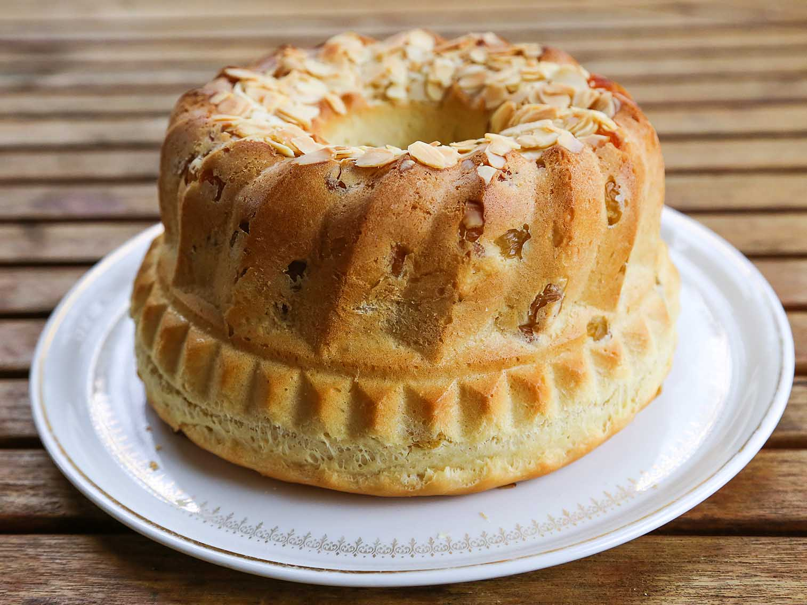
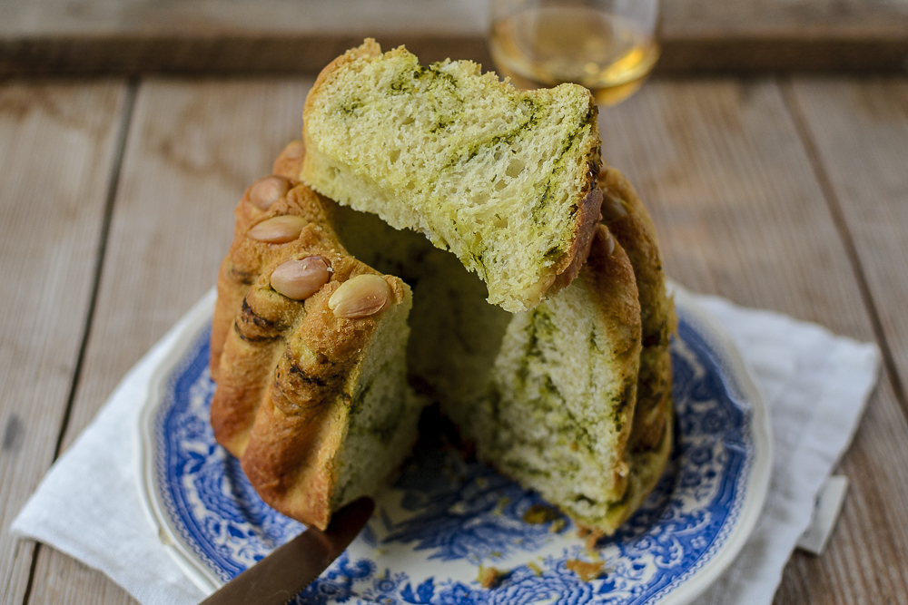
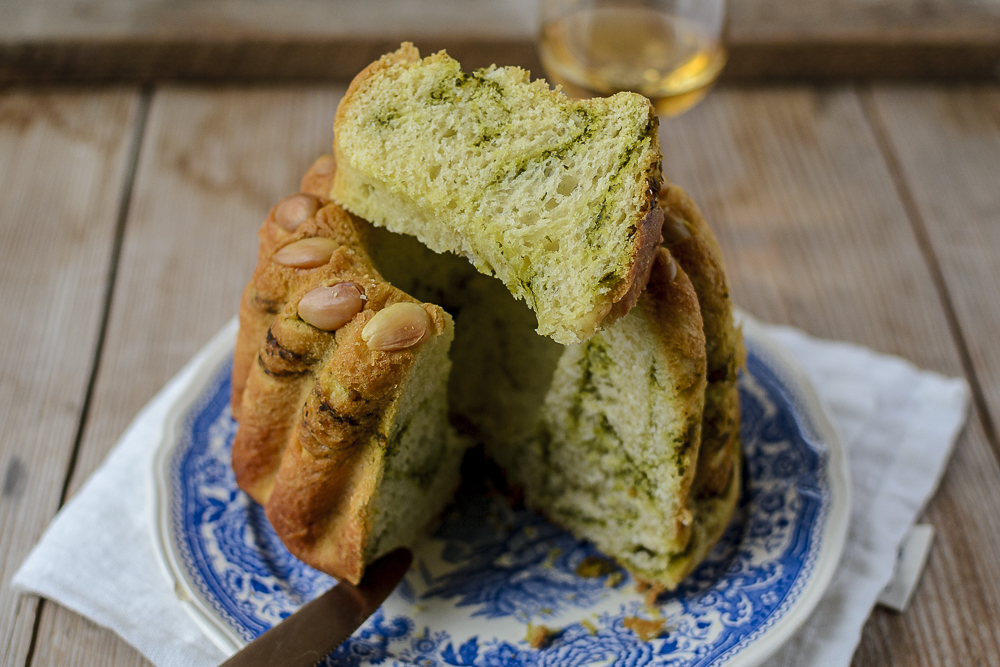
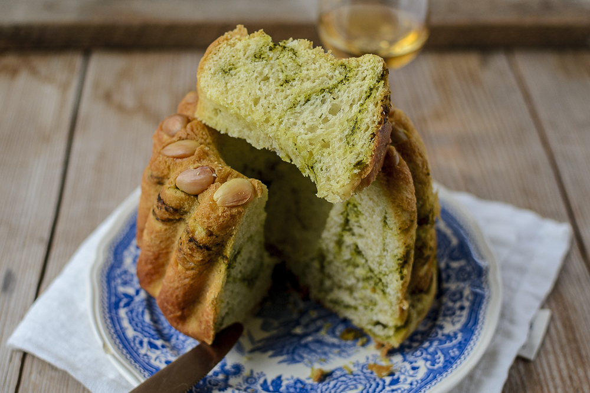
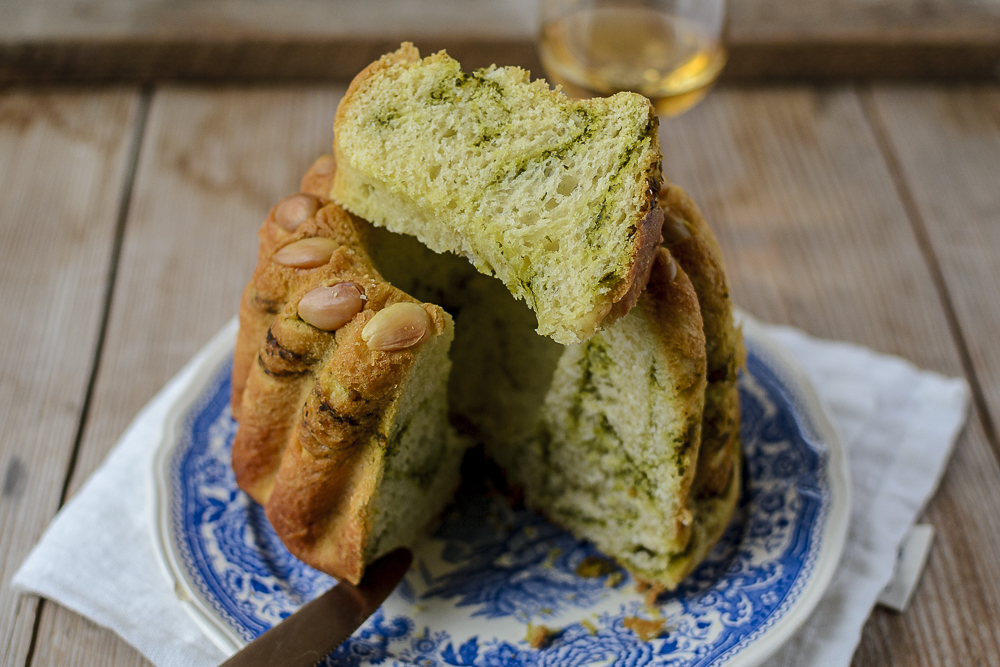

Kouglof
 



Le kougelhopf, de son nom originel alémanique, est une spécialité alsacienne, de l'Autriche, de la Tchéquie et du Sud de l'Allemagne.Il s'agit d'une brioche à pâte levée, dont l'apparence est caractéristique en raison de son moule, qui lui donne une forme haute, cannelée et creusée en son milieu.